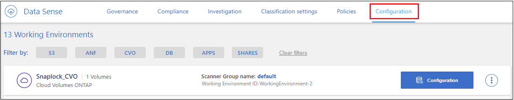
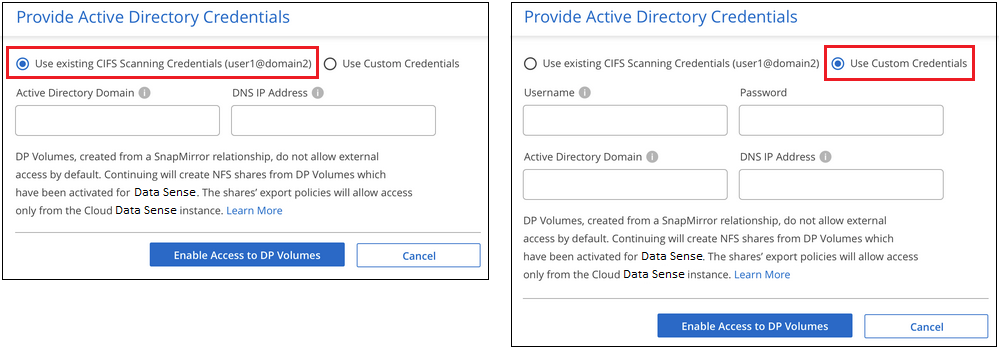

Richiedi modifiche alla documentazione
Richiedi modifiche alla documentazione Modifica questa pagina
Modifica questa pagina Scopri come collaborare
Scopri come collaborareIntroduzione alla classificazione BlueXP per Cloud Volumes ONTAP e on-premise ONTAP
Collaboratori
Completare alcuni passaggi per iniziare la scansione dei volumi Cloud Volumes ONTAP e ONTAP on-premise utilizzando la classificazione BlueXP.
Avvio rapido
Inizia subito seguendo questi passaggi o scorri verso il basso fino alle sezioni rimanenti per ottenere dettagli completi.
 Individuare le origini dati da sottoporre a scansione
Individuare le origini dati da sottoporre a scansionePrima di poter eseguire la scansione dei volumi, è necessario aggiungere i sistemi come ambienti di lavoro in BlueXP:
-
Per i sistemi Cloud Volumes ONTAP, questi ambienti di lavoro dovrebbero essere già disponibili in BlueXP
-
Per sistemi ONTAP on-premise, "BlueXP deve rilevare i cluster ONTAP"
 Distribuire l’istanza di classificazione BlueXP
Distribuire l’istanza di classificazione BlueXP"Implementare la classificazione BlueXP" se non è già stata implementata un’istanza.
 Abilitare la classificazione BlueXP e selezionare i volumi da sottoporre a scansione
Abilitare la classificazione BlueXP e selezionare i volumi da sottoporre a scansioneSelezionare la scheda Configuration (Configurazione) e attivare le scansioni di compliance per i volumi in ambienti di lavoro specifici.
 Garantire l’accesso ai volumi
Garantire l’accesso ai volumiOra che la classificazione BlueXP è attivata, assicurarsi che sia in grado di accedere a tutti i volumi.
-
L’istanza di classificazione BlueXP richiede una connessione di rete a ogni subnet Cloud Volumes ONTAP o sistema ONTAP on-premise.
-
I gruppi di protezione per Cloud Volumes ONTAP devono consentire le connessioni in entrata dall’istanza di classificazione BlueXP.
-
Assicurarsi che queste porte siano aperte per l’istanza di classificazione BlueXP:
-
Per NFS - porte 111 e 2049.
-
Per CIFS - porte 139 e 445.
-
-
I criteri di esportazione dei volumi NFS devono consentire l’accesso dall’istanza di classificazione BlueXP.
-
La classificazione BlueXP richiede le credenziali di Active Directory per eseguire la scansione dei volumi CIFS.
Fare clic su Compliance > Configuration > Edit CIFS Credentials (Modifica credenziali CIFS) e fornire le credenziali.
 Gestire i volumi che si desidera sottoporre a scansione
Gestire i volumi che si desidera sottoporre a scansioneSelezionare o deselezionare i volumi da sottoporre a scansione per avviare o interrompere la scansione della classificazione BlueXP.
Rilevamento delle origini dati che si desidera acquisire
Se le origini dati che si desidera sottoporre a scansione non sono già presenti nell’ambiente BlueXP, è possibile aggiungerle all’area di lavoro.
I sistemi Cloud Volumes ONTAP dovrebbero essere già disponibili in Canvas in BlueXP. Per i sistemi ONTAP on-premise, è necessario disporre di "BlueXP Scopri questi cluster".
Implementazione dell’istanza di classificazione BlueXP
Distribuire la classificazione BlueXP se non è già stata implementata un’istanza.
Se si esegue la scansione di sistemi Cloud Volumes ONTAP e ONTAP on-premise accessibili tramite Internet, è possibile "Implementare la classificazione BlueXP nel cloud" oppure "in una sede on-premise con accesso a internet".
Se si esegue la scansione di sistemi ONTAP on-premise che sono stati installati in un sito buio e che non dispone di accesso a Internet, è necessario "Implementare la classificazione BlueXP nella stessa posizione on-premise che non dispone di accesso a Internet". Ciò richiede anche che BlueXP Connector sia implementato nella stessa posizione on-premise.
Gli aggiornamenti al software di classificazione BlueXP sono automatizzati finché l’istanza dispone di connettività Internet.
Abilitazione della classificazione BlueXP negli ambienti di lavoro
Puoi abilitare la classificazione BlueXP sui sistemi Cloud Volumes ONTAP in qualsiasi cloud provider supportato e sui cluster ONTAP on-premise.
-
Dal menu di navigazione a sinistra di BlueXP, fare clic su Governance > Classification (Governance > classificazione), quindi selezionare la scheda Configuration (Configurazione).

-
Selezionare la modalità di scansione dei volumi in ciascun ambiente di lavoro. "Scopri le scansioni di mappatura e classificazione":
-
Per mappare tutti i volumi, fare clic su Map All Volumes (Mappa tutti i volumi).
-
Per mappare e classificare tutti i volumi, fare clic su Map & Classify All Volumes (Mappa e classificazione di tutti i volumi).
-
Per personalizzare la scansione per ciascun volume, fare clic su o selezionare il tipo di scansione per ciascun volume, quindi scegliere i volumi da mappare e/o classificare.
Vedere Attivazione e disattivazione delle scansioni di compliance sui volumi per ulteriori informazioni.
-
-
Nella finestra di dialogo di conferma, fare clic su approva per avviare la scansione dei volumi con la classificazione BlueXP.
La classificazione BlueXP avvia la scansione dei volumi selezionati nell’ambiente di lavoro. I risultati saranno disponibili nella dashboard Compliance non appena la classificazione BlueXP completa le scansioni iniziali. Il tempo necessario dipende dalla quantità di dati, che potrebbe essere di pochi minuti o ore.

|
|
Verificare che la classificazione BlueXP abbia accesso ai volumi
Assicurarsi che la classificazione BlueXP possa accedere ai volumi controllando la rete, i gruppi di sicurezza e le policy di esportazione. È necessario fornire la classificazione BlueXP con le credenziali CIFS in modo che possa accedere ai volumi CIFS.
-
Assicurarsi che sia presente una connessione di rete tra l’istanza di classificazione BlueXP e ciascuna rete che include volumi per cluster Cloud Volumes ONTAP o ONTAP on-premise.
-
Assicurarsi che il gruppo di protezione per Cloud Volumes ONTAP consenta il traffico in entrata dall’istanza di classificazione BlueXP.
È possibile aprire il gruppo di protezione per il traffico dall’indirizzo IP dell’istanza di classificazione BlueXP oppure aprire il gruppo di protezione per tutto il traffico dall’interno della rete virtuale.
-
Assicurarsi che le seguenti porte siano aperte per l’istanza di classificazione BlueXP:
-
Per NFS - porte 111 e 2049.
-
Per CIFS - porte 139 e 445.
-
-
Assicurarsi che i criteri di esportazione dei volumi NFS includano l’indirizzo IP dell’istanza di classificazione BlueXP in modo che possa accedere ai dati di ciascun volume.
-
Se si utilizza CIFS, fornire la classificazione BlueXP con le credenziali Active Directory in modo che possa eseguire la scansione dei volumi CIFS.
-
Dal menu di navigazione a sinistra di BlueXP, fare clic su Governance > Classification (Governance > classificazione), quindi selezionare la scheda Configuration (Configurazione).

-
Per ciascun ambiente di lavoro, fare clic su Edit CIFS Credentials (Modifica credenziali CIFS) e immettere il nome utente e la password necessari per la classificazione BlueXP per accedere ai volumi CIFS nel sistema.
Le credenziali possono essere di sola lettura, ma fornendo credenziali di amministratore si garantisce che la classificazione BlueXP possa leggere tutti i dati che richiedono autorizzazioni elevate. Le credenziali vengono memorizzate nell’istanza di classificazione BlueXP.
Se si desidera assicurarsi che i file "ultimi tempi di accesso" non vengano modificati dalle scansioni di classificazione BlueXP, si consiglia di disporre dei permessi Write Attributes in CIFS o Write Permissions in NFS. Se possibile, si consiglia di far parte dell’utente configurato con Active Directory di un gruppo principale dell’organizzazione che dispone delle autorizzazioni per tutti i file.
Dopo aver immesso le credenziali, viene visualizzato un messaggio che indica che tutti i volumi CIFS sono stati autenticati correttamente.

-
-
Nella pagina Configuration, fare clic su View Details (Visualizza dettagli) per esaminare lo stato di ciascun volume CIFS e NFS e correggere eventuali errori.
Ad esempio, l’immagine seguente mostra quattro volumi, uno dei quali non è in grado di eseguire la scansione a causa di problemi di connettività di rete tra l’istanza di classificazione BlueXP e il volume.

Attivazione e disattivazione delle scansioni di compliance sui volumi
È possibile avviare o interrompere scansioni di sola mappatura, o scansioni di mappatura e classificazione, in un ambiente di lavoro in qualsiasi momento dalla pagina di configurazione. È inoltre possibile passare da scansioni di sola mappatura a scansioni di mappatura e classificazione e viceversa. Si consiglia di eseguire la scansione di tutti i volumi.
Per impostazione predefinita, lo switch nella parte superiore della pagina per le autorizzazioni Scan when missing "write attributa" (Esegui scansione quando mancano gli attributi di scrittura) è disattivato. Ciò significa che se la classificazione di BlueXP non dispone di permessi di scrittura in CIFS o di permessi di scrittura in NFS, il sistema non eseguirà la scansione dei file perché la classificazione di BlueXP non può riportare l'"ultimo tempo di accesso" all’indicatore data e ora originale. Se non si ha alcun problema se l’ultimo tempo di accesso viene reimpostato, attivare l’interruttore per eseguire la scansione di tutti i file, indipendentemente dalle autorizzazioni. "Scopri di più".

| A: | Eseguire questa operazione: |
|---|---|
Abilitare le scansioni di sola mappatura su un volume |
Nell’area del volume, fare clic su Map (Mappa) |
Abilitare la scansione completa su un volume |
Nell’area del volume, fare clic su Map & Classify (Mappa e classificazione) |
Disattivare la scansione su un volume |
Nell’area del volume, fare clic su Off |
Abilitare le scansioni di sola mappatura su tutti i volumi |
Nell’area dell’intestazione, fare clic su Map (Mappa) |
Abilitare la scansione completa su tutti i volumi |
Nell’area dell’intestazione, fare clic su Map & Classify (Mappa e classificazione) |
Disattivare la scansione su tutti i volumi |
Nell’area dell’intestazione, fare clic su Off |
|
|
I nuovi volumi aggiunti all’ambiente di lavoro vengono sottoposti automaticamente a scansione solo se è stata impostata l’impostazione Map o Map & Classify nell’area di intestazione. Se l’opzione è impostata su Custom o Off nell’area heading, è necessario attivare la mappatura e/o la scansione completa su ogni nuovo volume aggiunto nell’ambiente di lavoro. |
Scansione dei volumi di protezione dei dati
Per impostazione predefinita, i volumi di protezione dei dati (DP) non vengono sottoposti a scansione perché non sono esposti esternamente e la classificazione BlueXP non può accedervi. Questi sono i volumi di destinazione per le operazioni SnapMirror da un sistema ONTAP on-premise o da un sistema Cloud Volumes ONTAP.
Inizialmente, l’elenco dei volumi identifica questi volumi come Type DP con Status Not Scanning e Required Action Enable Access to DP Volumes.

Se si desidera eseguire la scansione di questi volumi di protezione dei dati:
-
Fare clic su Enable Access to DP Volumes (attiva accesso ai volumi DP) nella parte superiore della pagina.
-
Leggere il messaggio di conferma e fare nuovamente clic su Enable Access to DP Volumes (attiva accesso ai volumi DP).
-
I volumi creati inizialmente come volumi NFS nel sistema ONTAP di origine sono abilitati.
-
I volumi creati inizialmente come volumi CIFS nel sistema ONTAP di origine richiedono l’immissione delle credenziali CIFS per eseguire la scansione di tali volumi DP. Se sono già state immesse le credenziali Active Directory in modo che la classificazione BlueXP possa eseguire la scansione dei volumi CIFS, è possibile utilizzare tali credenziali oppure specificare un set diverso di credenziali Admin.

-
-
Attivare ciascun volume DP che si desidera sottoporre a scansione allo stesso modo in cui sono stati attivati altri volumi.
Una volta attivata, la classificazione BlueXP crea una condivisione NFS da ogni volume DP attivato per la scansione. I criteri di esportazione delle condivisioni consentono l’accesso solo dall’istanza di classificazione BlueXP.
Nota: se non si dispone di volumi di protezione dati CIFS quando si è inizialmente attivato l’accesso ai volumi DP e successivamente ne sono stati aggiunti alcuni, il pulsante Enable Access to CIFS DP (Abilita accesso a CIFS DP) viene visualizzato nella parte superiore della pagina di configurazione. Fare clic su questo pulsante e aggiungere le credenziali CIFS per abilitare l’accesso a questi volumi CIFS DP.
|
|
Le credenziali di Active Directory vengono registrate solo nella VM di storage del primo volume CIFS DP, quindi tutti i volumi DP su tale SVM verranno sottoposti a scansione. Tutti i volumi che risiedono su altre SVM non avranno le credenziali di Active Directory registrate, pertanto tali volumi DP non verranno sottoposti a scansione. |